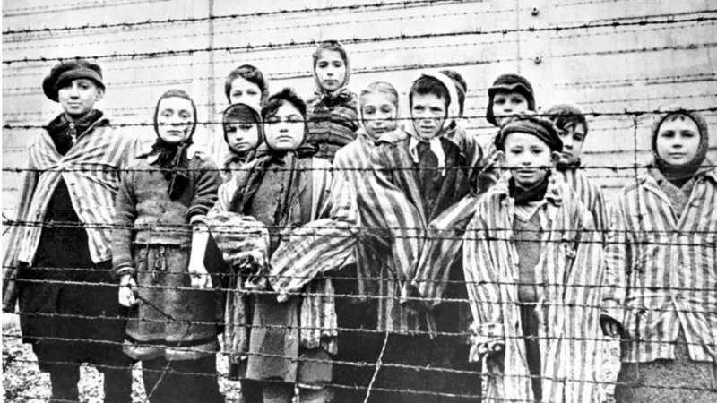
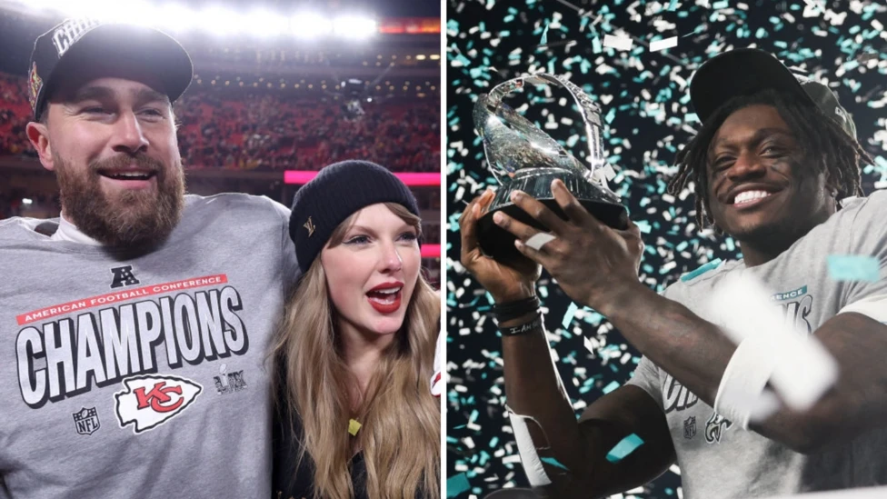
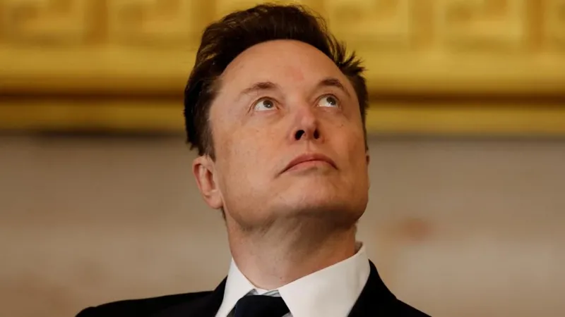

| Home News Tagum Gallery About Us |
|

Auschwitz: How death camp became centre of Nazi HolocaustJanuary 17, 2025Oswiecim, Poland – On January 27th, world leaders will join a dwindling number of Holocaust survivors to commemorate the 80th anniversary of the liberation of Auschwitz-Birkenau by Soviet troops. This year's event is expected to be particularly poignant as many of the surviving victims are in their 90s, making this potentially the last time a significant number can attend the commemoration. Nazi Germany systematically murdered over 1.1 million people at Auschwitz between 1940 and 1945, primarily Jews, but also Poles, Roma, and prisoners of war. The liberation by the Red Army on January 27, 1945, found only 7,000 emaciated survivors. Tens of thousands had been forced on "death marches" in the preceding months. The commemoration will serve as a stark reminder of the horrors of the Holocaust and the importance of remembering the victims and fighting against all forms of hatred and discrimination.

Chiefs to face Eagles for historic Super Bowl 'three-peat'January 26, 2025The Kansas City Chiefs are one win from an unprecedented NFL 'three-peat' after beating the Buffalo Bills to reach Super Bowl 59. The Chiefs held on for a thrilling 32-29 win over the Bills to become the first back-to-back champions to return to the Super Bowl. It is the fifth time in six years that Kansas City have reached the NFL's championship game, winning three of the past five. They will face the Philadelphia Eagles in New Orleans on 9 February, in a repeat of Super Bowl 57. Jaguar Land Rover bets $80m on bespoke paint servicesJanuary 27, 2025The UK's largest luxury car maker, Jaguar Land Rover (JLR), says it will invest £65m ($81m) to expand its bespoke paint services in response to growing demand from wealthy customers. The plan includes opening new paint facilities in Castle Bromwich, UK and Nitra, Slovakia. The firm, which is owned by India's Tata Group, says it expects to more than double its bespoke paint operation, including helping clients match the color of exclusive Range Rover SV models to their private jets or yachts. It follows a similar move by Rolls-Royce, which announced earlier this month that it was investing £300m to build more highly-customized versions of its cars for super-rich customers.

Musk, MrBeast, Larry Ellison - Who might buy TikTok?January 25, 2025Jimmy Donaldson - aka MrBeast - was jubilant as he told his tens of millions of TikTok followers about his bid to buy the platform. "I might become you guys' new CEO! I'm super excited!" Donaldson said from a private jet. He then proceeded to promise $10,000 to five random new followers. The internet creator's post has been viewed more than 73 million times since Monday. Donaldson said he could not share details about his bid, but promised: "Just know, it's gonna be crazy." Donaldson is one of multiple suitors who have expressed interest in purchasing TikTok, the wildly popular social media platform that's become the subject of a fast-moving political drama in the United States. Last year, then-President Joe Biden signed a law that gave TikTok's China-based parent company ByteDance until 19 January to sell the platform or face a ban in the United States. |